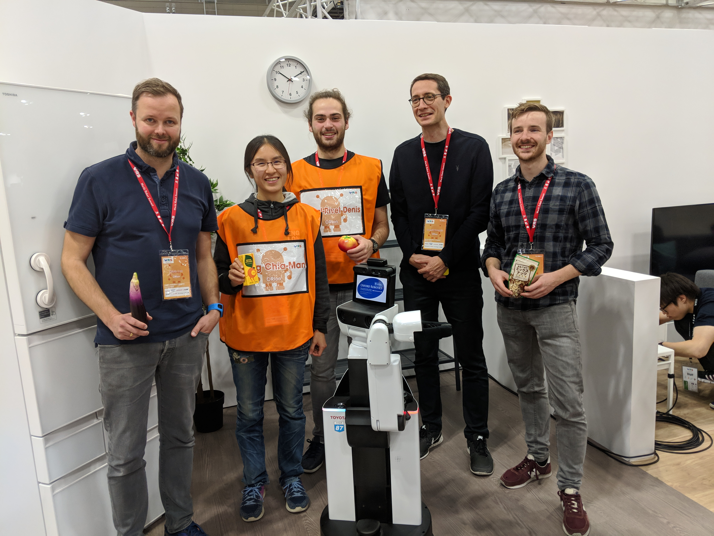
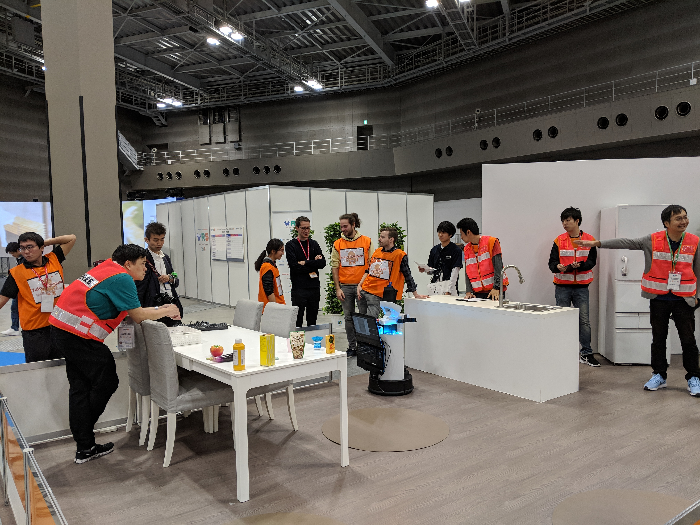

World Robot Summit 2018
The First Task – “Tidy-Up”
In the “tidy-up” task, the goal was to pick up a given set of objects from different locations in the house arena and place them at their designated areas. Originally, team ORIon was only going to focus on the second task because they had not yet developed the high level code to execute the tidy-up task. However, the team couldn’t resist the opportunity and so worked tirelessly to develop a working door handle grasp pipeline and the high level code needed to deal with the tidy up task. The game was on! Unfortunately, Team ORIon did not manage to score any points in this task but kudos to them, only 4 out of the 14 teams did. It was a very exciting day! Now to focus on the second task.
The Second Task – “Bring Me…”
The second WRS task that the team faced was the “bring me” task where the robot needed to recognize a set of objects, search the arena to and their locations and then receive verbal instructions about which objects to bring to the operator. In both runs of the competition, the team’s voice command recognition worked flawlessly and their Toyota HSR robot was able to understand all requested items and tasks. In the frrst run they had trouble with the object recognition part of their framework and no objects were reported back to the manipulation part. However, the HSR navigated the arena and searched the possible locations perfectly. In the second try the localization estimate kept diverging, leading the robot to moving around the living room in an effort to re-localize. The team did not make it to the final round but overall had a very good run! It was a very demanding week and they put on a great performance. They are looking forward to the next competition and are already making preparations for future events and expanding the team.